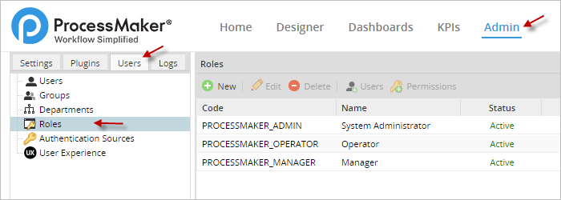
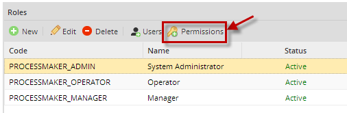
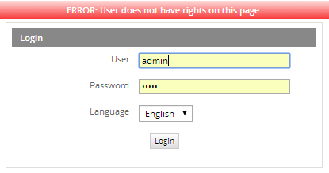
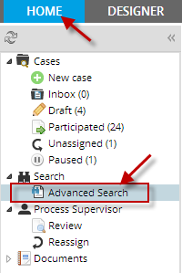
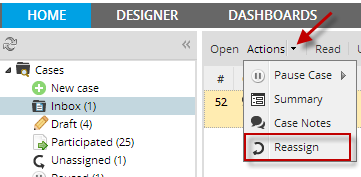
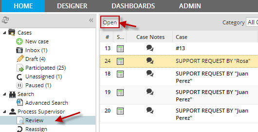
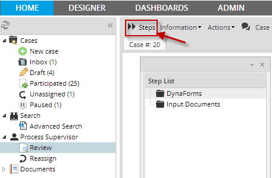

- Overview
- Managing Roles
- Managing Permissions
- PM_LOGIN
- PM_SETUP
- PM_USERS
- PM_FACTORY
- PM_CASES
- PM_ALLCASES
- PM_REPORTS
- PM_REASSIGNCASE
- PM_SUPERVISOR
- PM_SETUP_ADVANCE
- PM_DASHBOARD
- PM_WEBDAV
- PM_DELETECASE
- PM_CANCELCASE
- PM_EDITPERSONALINFO
- PM_FOLDERS_VIEW
- PM_FOLDERS_ADD_FOLDER
- PM_FOLDERS_ADD_FILE
- PM_DELETEFOLDER
- Creating and Editing Roles
Overview
A role is a set of permissions to access specified functionalities and resources in ProcessMaker. Each user is assigned a role, which determines what actions that user can perform in ProcessMaker and what parts of the interface that user can access.
Managing Roles
To see the available roles, login to ProcessMaker with a user such as the "admin" who has the PM_USERS permission in his/her role. Then, go to ADMIN > Users > Roles and the following list will display:

PROCESSMAKER_ADMIN
The PROCESSMAKER_ADMIN role is designed for system administrators and process designers who need access to all the features and functionality in ProcessMaker. Users who are assigned this role can do everything, including configure the system, create and edit processes, manage users and groups, manage cases, and oversee productivity with reports and dashboards.
PROCESSMAKER_MANAGER
The PROCESSMAKER_MANAGER role is for users who need to manage cases, users and groups and oversee productivity, but do not need to design processes or configure ProcessMaker.
PROCESSMAKER_OPERATOR
The PROCESSMAKER_OPERATOR role is for normal production users who just need to login and run cases.
Note: If a role is set as INACTIVE, and a user is assigned to that role, the user can NOT login to ProcessMaker until the role is changed to ACTIVE
Managing Permissions
If these three sets of permissions do not suit your organization's needs, the three default roles can be modified and new roles can be created as well. To customize roles, see the following descriptions of the available permissions which can be assigned to a role:
The 3 roles explained below has the following permissions:
To check permissions for each role, select the role and click on Permissions:

PM_LOGIN
The PM_LOGIN permission gives rights to login into ProcessMaker. Every role should include this permission. Without this permission, the following error message will appear when trying to login:

PM_SETUP
The PM_SETUP permission provides access to the ADMIN menu and its basic options, including Logo, Email, Process Category, Calendar, Skins, Heart Beat, Environment, Clear Cache, PM Tables, Web Services Test, Case Scheduler Log, Login and Dashboards.

Note: Before version 1.2-2552, the ADMIN menu was named SETUP.
PM_USERS
The PM_USERS permission provides access to the Users tab under the ADMIN menu and the ability to create, edit and delete users, groups, departments and roles.

Note: This permission does NOT provide access to the ADMIN > Users > Authentication Sources option, which is provided by the PM_SETUP_ADVANCE permission.
PM_FACTORY
The PM_FACTORY permission provides access to the DESIGNER menu and rights to create, edit and delete processes.

Note: The menu to design processes was named FACTORY in the original version of ProcessMaker and was named PROCESSES in version 1.X.
PM_CASES
The PM_CASES permission provides access to the HOME menu and the ability to run cases and view lists of cases which the user has been assigned to or participated in. This permission provides access to the Cases section in the sidebar and its suboptions: New Case, Inbox, Draft, Participated, Unassigned and Paused.

In addition, it provides access to the Documents option, which allows users to view any files which were uploaded (Input Documents and attached files) or generated (Output Documents) while running cases.
Warning: Users should only be able to view documents which they have rights to see
PM_ALLCASES
The PM_ALLCASES permission provides access to the Advanced Search option under the HOME menu, so that the user can view a list of all the cases in the current workspace. Note that the user can only view a list of the cases and view their summaries and case notes. In order to open these cases, the user will either need to either be designated to work on the case, be assigned Process Permissions, or be assigned as a Process Supervisor. This permission must be accompanied by PM_CASES in order to gain access to the HOME menu.

PM_REPORTS
Status: Deprecated
This permission is no longer in use. If you have this permission in use, you will be able to see in current version just upgrading it to 2.5; on the contrary, for new installations this permission can't be either seen or used.
PM_REASSIGNCASE
The PM_REASSIGNCASE permission provides the ability to reassign cases to other users. Note that a case can only be reassigned to users who are either in the assignment pool for the current task or in its ad hoc assignment pool. Other users can NOT be assigned to the case.
This permission adds a Reassign option under the Supervisor header in the HOME menu's sidebar, which displays a list of all the case in the workspace which have "To Do" or "Draft" status.

In addition, the PM_REASSIGNCASE permission adds the Reassign option to the Actions menu, which is available under the Inbox and Draft options and when running a case. Note that it is NOT possible to reassign cases under the Review, Advanced, Participated, Participated or Paused options, nor is it possible when opening a case summary or read-only access withProcess Permissions.

The PM_REASSIGNCASE permission needs to be accompanied by the PM_CASES permission, in order to access the HOME menu.
PM_SUPERVISOR
The PM_SUPERVISOR permission allows a user to be assigned as a Process Supervisor, which allows a user to view and modify data in DynaForms and Input Documents for designated processes. This permission adds the Supervisor section to the sidebar under the HOME menu and the Review option, which shows a list of cases which the Process Supervisor can review. Only cases with a "To Do" or "Draft" status are shown in the list and the cases must be from processes where the user has been assigned as a Process Supervisor.

After opening the case, the DynaForms and Output Documents which can be edited by the Supervisor will be available inside a "Step List" dialog box.

The PM_SUPERVISOR permission also allows the user to pause cases by going to Actions > Pause, however it doesn't grant the power to delete, cancel or reassign cases. Separate permissions are needed for those abilities.
The PM_SUPERVISOR permission needs to be accompanied by the PM_CASES permission, in order to access the HOME menu. It is a good idea to also assign Process Permissions to the Process Supervisor user. Otherwise, he/she can not use the standard Steps and Information menus to find out more information about the case.
PM_SETUP_ADVANCE
The PM_SETUP_ADVANCE permission provides access to advanced setup options under the ADMIN menu, including the Languages, Skins and Cases List Cache Builder options under theSettings tab, the Plugins tab, and the Authentication Sources option under the Users tab. This permission must be accompanied by the PM_SETUP permission in order to gain access to the ADMIN menu.
Note that before version 1.2-2552, the ADMIN menu was named SETUP.
PM_DASHBOARD
The PM_DASHBOARD permission provides access to the DASHBOARD menu and the ability to see ratios of completed versus open cases for different time periods. Note that this feature is available from version 2.0.34 on.

PM_WEBDAV
The PM_DASHBOARD permission provides the ability to use WebDAV (Web-based Distributed Authoring and Versioning) to upload and download files to the ProcessMaker server from the internet. See this wiki page for more info about configuring WebDAV.
PM_DELETECASE
Only cases which are still in their initial task can be deleted, meaning that they can be removed from the database. Once cases are routed onto subsequent tasks, they can only be canceled, not deleted. Any user who is designated to work on the initial task of a case can delete it by opening the case and selecting Actions > Delete in the menu.

The PM_DELETECASE permission allows cases in their initial tasks to be deleted by a user who NOT the designated user to work on the initial task. However, the only way a non-designated user can open a case so that it can be deleted is to be a Process Supervisor who accesses the case by going to HOME > Review.
Note: When a case is deleted, its record is removed from the wf_
PM_CANCELCASE
The PM_CANCELCASE permission allows a user to cancel cases for which he/she is designated to work on or can open as a Process Supervisor under HOME > Review. Cases can be canceled by opening a case and going Action > Cancel.

When a case is canceled, its status is changed to "Canceled" and it can no longer be worked on. The case can still be opened in read-only mode by going to HOME > Participated or HOME > Advanced Search, so its data can be accessed, but not changed. Cases in their initial task can only be deleted, not canceled.
The PM_CANCELCASE permission should be accompanied by the PM_CASES permission to access the HOME menu. If needing to cancel other user's cases, it should also be accompanied by the PM_SUPERVISOR permission.
Note 1: Once a case has been canceled, there is no way to uncancel it in the ProcessMaker interface; however, it is possible to uncancel a case by writing to the database.
Note 2: In version 1.X, all users could cancel any case they were designated to work on, but this ability was restricted in version 2.0 with the new PM_CANCELCASE permission because some users should not be able to cancel their own cases and avoid doing work. If needing all users to still have the ability to cancel their own cases in version 2.0, then add the PM_CANCELCASE permission to their roles.
PM_EDITPERSONALINFO
The PM_EDITPERSONALINFO permission allows users editing their personal information such as their account passwords without requiring to have the PM_USERS permission in their role. The personal information of a user can be edited by clicking on his/her username in the upper right-hand corner of the ProcessMaker header.

Note: In version 1.X, operator users without the PM_EDITPERSONALINFO permission could change their passwords. However, in version 2.X this permission is required to change the password or enable the forgotten password option under ADMIN > Login.
PM_FOLDERS_VIEW
The PM_FOLDERS_VIEW allows a user to view folders and download files under HOME > Documents, but now all users with the PM_CASES permission have access to HOME > Documents. Note that users can only see files from cases which they are designated to work on or they have Process Permissions to access.

PM_FOLDERS_ADD_FOLDER
The PM_FOLDERS_ADD_FOLDER permission allows a user to add folders under HOME > Documents.
PM_FOLDERS_ADD_FILE
The PM_FOLDERS_ADD_FILE permission allows a user to add and delete files under HOME > Documents.
PM_DELETEFOLDER
The PM_DELETEFOLDER permission allows a user to delete a folder under HOME > Documents.
Creating and Editing Roles
If the 3 default roles are not adequate for the users in your organization, custom roles can be created. To create a new role, go to USERS > ROLES and click on the New link at the top of the list of roles. Then define the properties of the new role.

- Code: Enter a unique identifier for the role.
- Name: Enter a name for the role, which will be displayed in the role list.
- Status: Select whether the role is "Active" or "Inactive". A role which is set to "Inactive" can not be assigned to users.
When done defining the role, click on Save to add the new role.
The new role should now appear in the list of roles. Now assign permissions to the new role by clicking on its Permissions link.

Click on Permissions to add a permission to the role, then click on Edit Permissions and a list of the available permissions will appear:

Select the permission to add and click on ">" for one permission or ">>" for all permissions link.
To edit the name and properties of an existing role, go to USERS > ROLES and click on the Edit link for the link.
To edit the list of permissions in an existing role, go to USERS > ROLES and click on the Permissions link for the role.
Note: All roles need to include the PM_LOGIN permission in order to function correctly. Without PM_LOGIN, the user can't login to access the rest of the functionality in ProcessMaker.